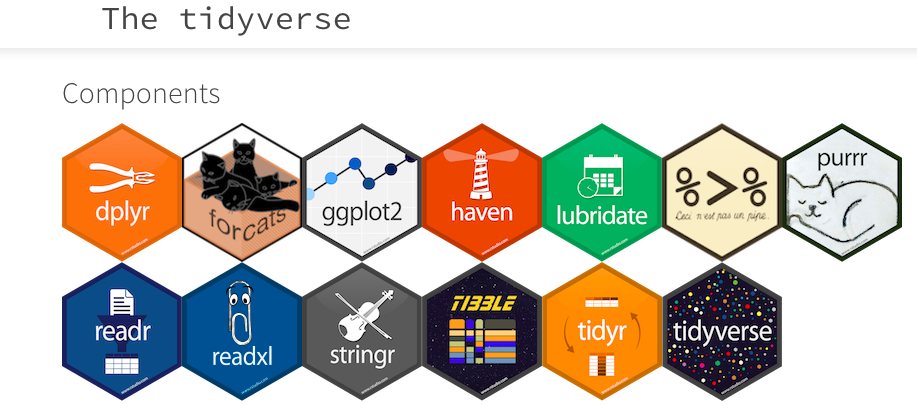
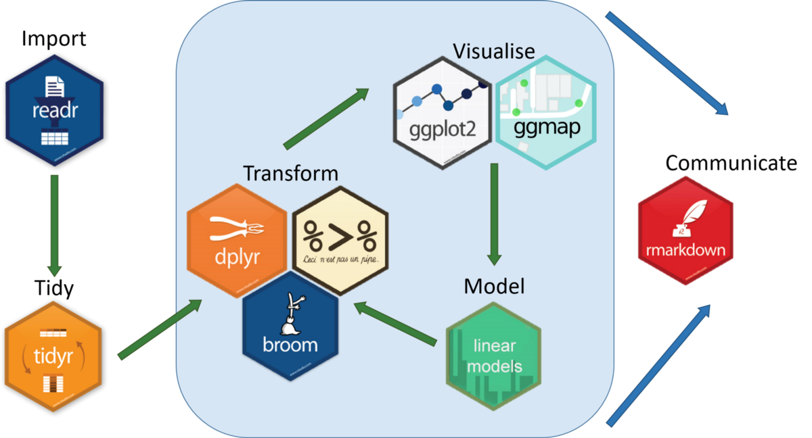

2 == 2 # Igualdad
## [1] TRUE
2 != 2 # Diferencia
## [1] FALSE
2 > 2 # Mayor
## [1] FALSE
2 < 2 # Menor
## [1] FALSE
2 >= 2 # Mayor o igual
## [1] TRUE
2 <= 2 # Menor o igual
## [1] TRUE
!(2 + 2) == 4 # Negación
## [1] FALSESemillero de R - FacCA
Mundo R + tidyverse I
Mundo R
Elementos básicos con R
- Entradas básicas:
#:comentario.<-:asignación.help()o?: sistema de ayudas en R.getwd():obtener el directorio de trabajo.CTRL + Enter: Ejecutar código.CTRL + L: Limpiar consola.
- Operadores Aritméticos:
+: suma.-: resta.*: multiplicación./: división.^: potencia.%%: división entera.%/%: división modular.
Elementos básicos con R
- Operadores lógicos:
==: igualdad.!=: diferencia.>: mayor.<: menor.>=: mayor o igual.<=: menor o igual.!: negación.
Elementos básicos con R
Elementos básicos con R
- Conjunción y disyunción:
&-&&: conjunción.|-||: disyunción.
flores <- c(10, 2, 5)
frutos <- c(6, 7, 3)
# Conjunción
(flores > 3) & (frutos <= 2)
## [1] FALSE FALSE FALSE
(flores > 3) && (frutos <= 2)
## [1] FALSE
# Disyunción
(flores > 3) | (frutos <= 2)
## [1] TRUE FALSE TRUE
(flores > 3) || (frutos <= 2)
## [1] TRUEElementos básicos con R
- Tipos de datos en R
- Numéricos:
numeric - Enteros:
integer - Caracteres:
character - Lógicos:
logical - Complejos:
complex - Nota: la función
class()permite obtener el tipo de dato de un objeto o variable.
- Numéricos:
numerico <- 3.5
entero <- 2L
caracter <- "Semillero de R"
logico <- TRUE
complejo <- 1 + 2i
class(numerico)
## [1] "numeric"
class(entero)
## [1] "integer"
class(caracter)
## [1] "character"
class(logico)
## [1] "logical"
class(complejo)
## [1] "complex"Objetos estructurados
- Vectores:
- Función
c()para generar vectores. - Características: sólo almacena datos de un mismo tipo.
- Función
- Matrices:
- Función
matrix()para crear matrices. - Características: sólo almacena datos de un mismo tipo.
- Función
- Factores:
- Caracteres con jerarquías o niveles.
- Útil para manipular variables categóricas (nominales u ordinales).
- La función
levels()permite observar los niveles de un factor. - Las funciones
table()yprop.table()permiten obtener las frecuencias absolutas y relativas, respectivamente. - Los niveles se organizan por defecto por orden alfabético.
- Listas:
- Función
list()para crear listas. - Las listas poseen longitud.
- Las listas poseen nombres de variables (
names()). - Características: permite almacenar cualquier tipo de dato.
- Función
Objetos estructurados
- Data frame:
- Función
data.frame()permite generar marcos de datos (bases de datos). - Los marcos de datos poseen nombres, longitud y dimensión.
- La función
str()es de gran utilidad para observar la estructura interna de un objeto (en este caso de una base de datos). - El operador
$permitirá elegir variables de la base de datos. - El operador
$también facilitará la agregación de variables. - La función
head()permite mostrar un número determinado de datos iniciales. - La función
tail()permite mostrar un número determinado de datos finales. - Características:
- Permite almacenar datos de diferente tipo.
- Cada columna representa una variable (vector).
- Cada fila es una observación, registro o individuo.
- Todas las variables deben tener la misma longitud.
- Las bases de datos se pueden crear, importar o utilizar las que trae R por defecto (
data()).
- Función
Objetos estructurados
########### EJEMPLO DE UN FACTOR ##############################################
# Niveles por defecto
factor1 <- factor(x = c("Hombre", "Mujer", "Hombre", "Mujer"))
class(factor1)
## [1] "factor"
levels(factor1)
## [1] "Hombre" "Mujer"
# Manipulando los niveles del factor
factor2 <- factor(x = c("Hombre", "Mujer", "Hombre", "Mujer"),
levels = c("Mujer", "Hombre"))
class(factor2)
## [1] "factor"
levels(factor2)
## [1] "Mujer" "Hombre"
# Frecuencia absoluta
table(factor2)
## factor2
## Mujer Hombre
## 2 2
# Frecuencia relativa
prop.table(table(factor2))
## factor2
## Mujer Hombre
## 0.5 0.5Coerción
- Implícita: conversión automática.
- Explícita: conversión dirigida.
as.numeric():conversión a numérico.as.integer():conversión a entero.as.character():conversión a caracter.as.logical():conversión a lógico.as.complex():conversión a complejo.as.vector():conversión a vector.as.matrix():conversión a matrix.as.factor():conversión a factor.as.list():conversión a lista.as.data.frame():conversión a base de datos.
Coerción
# Implícita
coer.imp <- c(2, "Texto", TRUE)
coer.imp
## [1] "2" "Texto" "TRUE"
class(coer.imp)
## [1] "character"
# Explícita
as.numeric(coer.imp)
## [1] 2 NA NA
as.logical(coer.imp)
## [1] NA NA TRUELectura y escritura de datos
- Lectura:
read.csv():valores separados por comas.read.csv2():valores separados por punto y coma.read.table():valores separados por espacios en blanco.
- Escritura:
write.csv()write.csv2()write.table()
- Conversión de formatos:
- Función
save(): guardar (escribir) datos en formato .Rdata. - Función
load(): cargar (leer) datos en formato .Rdata.
- Función
Tidyverse
Proceso de análisis de datos

Componentes del tidyverse

Análisis de datos + tidyverse

Análisis de datos + tidyverse

Funciones de dplyr
%>%: operador de encadenamiento de procesos.dplyr:filter(): filtrar filas.arrange(): reordenar filas.slice(): seleccionar filas.select(): seleccionar columnas.mutate: editar o generar nuevas variables.summarise: resumir datos.group_by(): operaciones agrupadas.
Funciones de ggplot2
ggplot2:ggplot: primera capa con los datos y el mapeo (mapping) estético (aes) del gráfico.x: eje x.y: eje y.color: color de bordes o líneas.fill: color de relleno.
+: agregar una nueva capa al gráfico.geom_: objetos geométricosgeom_point(): diagrama de dispersión x vs y.geom_histogram(): histogramas.geom_boxplot(): diagrama de cajas y bigotes.geom_bar(): diagrama de barras.geom_col(): diagrama de barras (con eje y definido).geom_density(): densidad.geom_line(): líneas (interesantes en series temporales).
Funciones de ggplot2
labs: etiquetas del gráfico (eje x, eje y, título, subtítulo).theme_: temas para el gráfico.facet_wrap(): facetas con una variable categórica.facet_grid(): facetas con dos o más variables categóricas.
Ejemplos prácticos
Calidad Educativa - Medellín 2016
# Lectura de datos
educa <- read.csv("Datos/_ndice_Sint_tico_de_Calidad_Educativa_-_ISCE_-_Municipio_de_Medell_n_2016.csv")
# Guardando datos en formato .Rdata
save(educa, file = "I_Educativo.Rdata")
# Cargando datos en formato .Rdata
load("I_Educativo.Rdata")
# Estructura interna de los datos
str(educa)
## 'data.frame': 381 obs. of 9 variables:
## $ DANE : num 1.05e+11 1.05e+11 1.05e+11 1.05e+11 1.05e+11 ...
## $ PRESTACION : chr "OFICIAL" "OFICIAL" "OFICIAL" "OFICIAL" ...
## $ COMUNA : int 2 2 16 4 1 3 4 10 8 15 ...
## $ NOMBRE.COMUNA : chr " SANTA CRUZ" " SANTA CRUZ" " BELEN" " ARANJUEZ" ...
## $ NOMBRE : chr "INST EDUC JOSE MARIA VELAZ" "INST EDUC BARRIO SANTA CRUZ" "INST EDUC JOSE MARIA BERNAL" "INST EDUC CAMILO TORRES RESTREPO" ...
## $ ISCE.Primaria : num 4.6 4 6.29 7.78 6.41 5.94 3.92 4.45 4.27 6.9 ...
## $ ISCE.Secundaria: chr "5.67" "4.76" "7.17" "6.45" ...
## $ ISCE.Media : chr "4.38" "3.82" "7.48" "4.15" ...
## $ ISCE.TOTAL : num 4.93 4.23 6.84 6.59 NA 4.96 4.5 5.59 4.76 5.34 ...Estado nutricional en infantes Medellín 2016
# Lectura de datos
datos <- read.csv("Datos/Estado_nutricional_de_la_poblaci_n_menor_de_6_a_os_-_Municipio_de_Medell_n_2016.csv")
# Conversión a formato .Rdata
save(datos, file = "NutricionInfantil.Rdata")
# Cargando datos en formato .Rdata
load("NutricionInfantil.Rdata")
# Estructura interna de los datos
str(datos)
## 'data.frame': 83861 obs. of 15 variables:
## $ Regimen : chr "Particular" "Contributivo" "Contributivo" "Contributivo" ...
## $ EPS : chr "OTRA" "EPS Y MEDICINA PREPAGADA SURAMERICANA S.A" "EPS Y MEDICINA PREPAGADA SURAMERICANA S.A" "EPS Y MEDICINA PREPAGADA SURAMERICANA S.A" ...
## $ Sexo : chr "M" "F" "M" "M" ...
## $ Peso : num 11.4 11.9 14.2 19.3 8.4 9.3 13.9 11.2 8.4 8.5 ...
## $ Estatura : num 79 86.5 91.5 101 72 74 97.5 89 66.5 74.6 ...
## $ DS.P.E : num 0.04 0.75 1.58 2.97 -0.55 0.03 -1.87 -1.52 -0.17 -1.36 ...
## $ Denominación.P.E: chr "Peso adecuado para la edad" "Peso adecuado para la edad" "Por encima de 1 desviacion estandar" "Por encima de 1 desviacion estandar" ...
## $ DS.T.E : num -1.85 1.11 1.82 2.33 -0.85 0.08 -2.22 -0.96 -1.52 -1.62 ...
## $ Denominación.T.E: chr "Riesgo de estatura baja" "Estatura adecuada para la edad" "Estatura adecuada para la edad" "Estatura adecuada para la edad" ...
## $ DS.P.T : num 1.24 0.17 0.91 2.45 -0.22 0 -0.79 -1.55 0.99 -0.83 ...
## $ Denominación.P.T: chr "Sobrepeso" "Peso adecuado para la estatura" "Peso adecuado para la estatura" "Obesidad" ...
## $ Comuna : chr "Robledo" "La América" "Guayabal" "Belén" ...
## $ Zona : chr "NorOccidental" "Centro Occidental" "Sur Occidental" "Sur Occidental" ...
## $ Edad_en_dias : int 641 684 721 980 408 350 1754 967 283 544 ...
## $ Grupo.Edad : chr "1. De 0 a 2 Anos" "1. De 0 a 2 Anos" "1. De 0 a 2 Anos" "2. De 2 a 5 Anos" ...